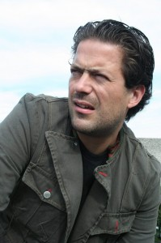

Sannhet og Prosess med Terje Skonseng Naudeer - 2 dager
- Kategori:
- Kurs og workshops
Kurs og workshops
Åpent for profesjonelle skuespillere, dvs. treårig utdanning i skuespillerkunst eller tilsvarende profesjonell erfaring. - Dato:
- 15.04.2015 til 16.04.2015
- Start kl :
- 11:00
- Slutt kl :
- 16:00
- Pris:
- 450,-
- Adresse:
- Norsk Skuespillersenter, Welhavensgate 1, Oslo
2 dagers workshop med utgangspunkt i "Draum om hausten" av Jon Fosse
{kind=link}
Formålet med denne workshopen er å komme dypere ned i teksten.
For meg som instruktør er utgangspunktet å skape et godt rom for skuespillerne; et arbeidsrom med trygghet, fokus og kraft.
Derfra forsøker jeg sammen med skuespillerne å komme inn til selve kjernen i teaterstykket. Foruten å bestemme en klar og god lesning av stykket, innebærer også dette å ha en ærlig prosess som lodder dypt.
I en ferdig forestilling vil jeg unngå at man "viser" scener, som en påstand, men derimot at scenene og situasjonene REELT skal utfolde seg for oss i rommet og på scenen. Denne streben etter en scenisk sannhet er krevende og ikke mulig uten ærlig og hardt arbeid.
Første dag blir det lesning av stykket, deretter en diskusjon og samtale rundt dets tema, innhold og påvirkning.
Dag to jobber man på gulvet med utvalgte scener fra stykket. Formålet her er å gripe fatt i en ekte prosess og forholde seg til en sannhet i skuespillerens møte med karakteren og teksten.
Terje Skonseng Naudeer (født 30.05.73), er utdannet skuespiller fra Arts Educational School of Acting, London (BA Acting 2000-2003).
Etter endt utdanning har Naudeer arbeidet som skuespiller og sceneinstruktør i en rekke produksjoner. Som skuespiller har han blant annet arbeidet ved Det Norske Teatret (Forbrytelse og straff, regi: Tobias Theorell) og Hålogaland Teater (Et Drømspill, regi: Hilda Hellwig og En folkefiende, regi: Øyvind Osmo Eriksen). Under regi av Birgitte Strid har han dessuten tolket store roller som Iiago (Othello), Jean (Frk. Julie), Leontes (A Winters Tale), og Don Pedro (Stor ståhei for ingenting). Han har også spilt den mannlige hovedrollen i Blasted (regi: Kate Pendry) og i Winter av Jon Fosse. Naudeer er dessuten kjent fra tv-serier som Eva og Adam og Himmelblå.
Som teaterinstruktør har Naudeer satt opp The Hamletmachine (Edinburgh Fringe Festival – 2003) og VERDENSFORTELLINGER (Nationaltheatret – 2008).
Gjennom hans tolkning av nyere dramatikk som Vilde av Tale Næss og Psykose 4.48 av Sarah Kane, klarte Naudeer å få fram dype traumer og uro gjennom en stringent regi. Nylig har Naudeer initiert Teatertrilogi av Sæterbakken/Naudeer der han skal iscenesette de tre siste romanene av Stig Sæterbakken. Første del, Ikke forlat meg, ble satt opp ved Brageteatret våren 2014 og høstet strålende kritikker. Høsten 2013 satte Naudeer opp en kritikerrost En sporvogn til begjær ved Nordland Teater, og skal tilbake dit våren 2015 for å sette opp Døden og piken. Deretter følger Pusterom (Lungs av Duncan Macmillan) ved Teatret vårt.
Pris for mdl av NSF: 400,-